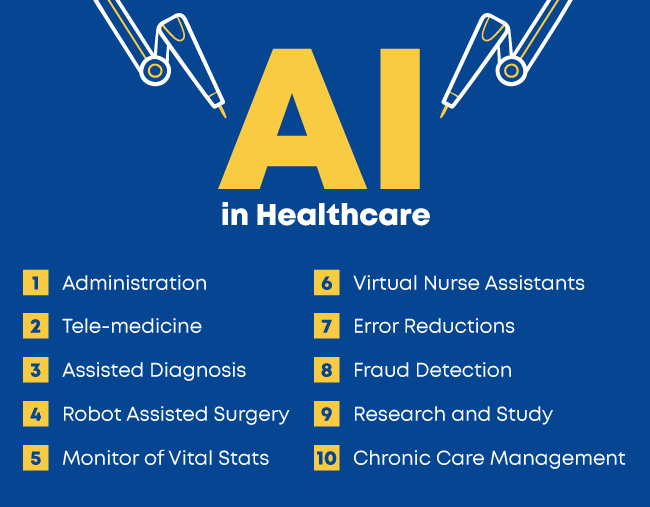

ARTIFICIAL INTELLIGENCE
The ability of a digital computer or computer-controlled robot to perform tasks commonly associated with intelligent beings. The term is frequently applied to the project of developing systems endowed with the intellectual processes characteristic
of humans, such as the ability to reason, discover meaning, generalize, or learn from past experience. Since the development of the digital computer in the 1940s, it has been demonstrated that computers can be programmed to carry out very
complex tasks—as, for example, discovering proofs for mathematical theorems or playing chess—with great proficiency. Still, despite continuing advances in computer processing speed and memory capacity, there are as yet no programs that can
match human flexibility over wider domains or in tasks requiring much everyday knowledge. On the other hand, some programs have attained the performance levels of human experts and professionals in performing certain specific tasks, so that
artificial intelligence in this limited sense is found in applications as diverse as medical diagnosis, computer search engines, and voice or handwriting recognition.

How Does Artificial Intelligence Work?
AI Approaches and Concepts
Less than a decade after breaking the Nazi encryption machine Enigma and helping the Allied Forces win World War II, mathematician Alan Turing changed history a second time with a simple question: "Can machines think?" Turing's paper "Computing
Machinery and Intelligence" (1950), and its subsequent Turing Test, established the fundamental goal and vision of artificial intelligence. At its core, AI is the branch of computer science that aims to answer Turing's question in the
affirmative. It is the endeavor to replicate or simulate human intelligence in machines. The expansive goal of artificial intelligence has given rise to many questions and debates. So much so, that no singular definition of the field is
universally accepted.
Can machines think? – Alan Turing, 1950
The major limitation in defining AI as simply "building machines that are intelligent" is that it doesn't actually explain what artificial intelligence is? What makes a machine intelligent? AI is an interdisciplinary science with multiple
approaches, but advancements in machine learning and deep learning are creating a paradigm shift in virtually every sector of the tech industry. In their groundbreaking textbook Artificial Intelligence: A Modern Approach, authors Stuart
Russell and Peter Norvig approach the question by unifying their work around the theme of intelligent agents in machines. With this in mind, AI is "the study of agents that receive percepts from the environment and perform actions." (Russel
and Norvig viii)
Norvig and Russell go on to explore four different approaches that have historically defined the field of AI:
-
Thinking humanly
-
Thinking rationally
-
Acting humanly
-
Acting rationally
The first two ideas concern thought processes and reasoning, while the others deal with behavior. Norvig and Russell focus particularly on rational agents that act to achieve the best outcome, noting "all the skills needed for the Turing Test
also allow an agent to act rationally." (Russel and Norvig 4). Patrick Winston, the Ford professor of artificial intelligence and computer science at MIT, defines AI as "algorithms enabled by constraints, exposed by representations that
support models targeted at loops that tie thinking, perception and action together." While these definitions may seem abstract to the average person, they help focus the field as an area of computer science and provide a blueprint for
infusing machines and programs with machine learning and other subsets of artificial intelligence.
The Four Types of Artificial Intelligence
Reactive Machines
Reactive machines are the simplest level of robot. They cannot create memories or use information learnt to influence future decisions – they are only able to react to presently existing situations. IBM’s Deep Blue, a machine designed to play
chess against a human, is an example of this. Deep Blue evaluates pieces on a chess board and reacts to them, based on pre-coded chess strategies. It does not learn or improve as it plays – hence, it is simply ‘reactive’.
Limited Memory
There are numerous terms and definitions in the field of artificial intelligence which can make it hard to distinguish categories from subsets or types of artificial intelligence. Number of subsets of AI include machine learning, big data
and natural language processing, but this article will cover only one type of artificial intelligence - limited memory. Other types of AI include reactive machines, theory of mind, and self-awareness. Limited memory consists of machine
learning models that extract knowledge from previously learned information, facts, stored data or events. As distinct from reactive machines, limited memory is able to learn from the past by analysing actions or data given to them
with the purpose of building probationary knowledge. This type of AI is employed by virtual voice assistants, chatbots, self-driving cars, and several other technologies.
Autonomous vehicles, also known as self-driving cars, use limited memory technology that relies on a combination of observationally gathered and integrated knowledge. Their ability to drive and function adequately among human-reliant vehicles
comes from analysing their environment, detecting patterns or alterations in external factors, and adapting as required. Self-driving cars don’t just monitor their environment, but also take into account the movement of other traffic
participants found in their line of sight. Its software analyses the data and decides on adapting the speed or choosing the direction of the vehicle. In the past, autonomous vehicles without limited memory AI needed up to 100 seconds
to react and make decisions based on external factors. After the implementation of limited memory, response time on machine-based observations has decreased tremendously, showing the value of limited memory AI. With AI penetrating
our daily lives with the intention to stay and make our lives easier it is interesting to see how quickly it is developing and evolving, allowing different industries to advance. Science fiction is gradually becoming reality with new
technological developments emerging every day. Who knows what tomorrow brings?
Theory of Mind

Our brain is a complex and not yet fully understood system. Trying to figure out how our mind functions is something that has been pursued by philosophers for as long as written evidence can prove. In this context, some of the most intriguing
questions that can arise are related to the possibility to find out what is happening inside someone else’s (or even one’s self) mind. Is human behavior predictable given enough variables are observable?
The concept is based on the psychological premise of understanding that other living things have thoughts and emotions that affect the behavior of one’s self. In terms of AI machines, this would mean that AI could comprehend how humans,
animals and other machines feel and make decisions through self-reflection and determination, and then will utilize that information to make decisions of their own. Essentially, machines would have to be able to grasp and process the
concept of “mind,” the fluctuations of emotions in decision making and a litany of other psychological concepts in real time, creating a two-way relationship between people and artificial intelligence.
Self-awareness
Once Theory of Mind can be established in artificial intelligence, sometime well into the future, the final step will be for AI to become self-aware. This kind of artificial intelligence possesses human-level consciousness and understands
its own existence in the world, as well as the presence and emotional state of others. It would be able to understand what others may need based on not just what they communicate to them but how they communicate it. Self-awareness
in artificial intelligence relies both on human researchers understanding the premise of consciousness and then learning how to replicate that so it can be built into machines.
USES
How is AI Used?
AI is used in different domains to give insights into user behaviour and give recommendations based on the data. For example, Google’s predictive search algorithm used past user data to predict what a user would type next in the search
bar. Netflix uses past user data to recommend what movie a user might want to see next, making the user hooked onto the platform and increase watch time. Facebook uses past data of the users to automatically give suggestions to
tag your friends, based on their facial features in their images. AI is used everywhere by large organisations to make an end user’s life simpler.
The uses of Artificial Intelligence would broadly fall under the data processing category, which would include the following:
-
Searching within data, and optimising the search to give the most relevant results
-
Logic-chains for if-then reasoning, that can be applied to execute a string of commands based on parameters
-
Pattern-detection to identify significant patterns in large data set for unique insights
-
Applied probabilistic models for predicting future outcomes
What are the Advantages of Artificial Intelligence?
There’s no doubt in the fact that technology has made our life better. From music recommendations, map directions, mobile banking to fraud prevention, AI and other technologies have taken over. There’s a fine line between advancement
and destruction. There’s always two sides to a coin, and that is the case with AI as well.
Let us take a look at some advantages of Artificial Intelligence-
Advantages of Artificial Intelligence (AI)
-
Reduction in human error
-
Available 24×7
-
Helps in repetitive work
-
Digital assistance
-
Faster decisions
-
Rational Decision Maker
-
Medical applications
-
Improves Security
-
Efficient Communication
AI in Everyday life
Here is a list of AI applications that you may use in everyday life:
Online shopping: Artificial intelligence is used in online shopping to provide personalised recommendations to users, based on their previous searches and purchases.
Digital personal assistants: Smartphones use AI to provide personalised services. AI assistants can answer questions and help users to organise their daily routines without a hassle.
Machine translations: AI-based language translation software provides translations, subtitling and language detection which can help users to understand other languages.
Cybersecurity: AI systems can help recognise and fight cyberattacks based on recognising patterns and backtracking the attacks.
Artificial intelligence against Covid-19: In the case of Covid-19, AI has been used in identifying outbreaks, processing healthcare claims, and tracking the spread of the disease.
Applications
AI truly has the potential to transform many industries, with a wide range of possible use cases. What all these different industries and use cases have in common, is that they are all data-driven. Since Artificial Intelligence
is an efficient data processing system at its core, there’s a lot of potential for optimisation everywhere.
Let’s take a look at the industries where AI is currently shining.
Healthcare:
-
Administration: AI systems are helping with the routine, day-to-day administrative tasks to minimise human errors and maximise efficiency. Transcriptions of medical notes through NLP and helps structure patient information
to make it easier for doctors to read it.
-
Telemedicine: For non-emergency situations, patients can reach out to a hospital’s AI system to analyse their symptoms, input their vital signs and assess if there’s a need for medical attention. This reduces the workload
of medical professionals by bringing only crucial cases to them.
-
Assisted Diagnosis: Through computer vision and convolutional neural networks, AI is now capable of reading MRI scans to check for tumours and other malignant growths, at an exponentially faster pace than radiologists
can, with a considerably lower margin of error.
-
Robot-assisted surgery: Robotic surgeries have a very minuscule margin-of-error and can consistently perform surgeries round-the-clock without getting exhausted. Since they operate with such a high degree of accuracy,
they are less invasive than traditional methods, which potentially reduces the time patients spend in the hospital recovering.
-
Vital Stats Monitoring: A person’s state of health is an ongoing process, depending on the varying levels of their respective vitals stats. With wearable devices achieving mass-market popularity now, this data is not
available on tap, just waiting to be analysed to deliver actionable insights. Since vital signs have the potential to predict health fluctuations even before the patient is aware, there are a lot of live-saving
applications here.

E-commerce
-
Better recommendations: This is usually the first example that people give when asked about business applications of AI, and that’s because it’s an area where AI has delivered great results already. Most large e-commerce
players have incorporated Artificial Intelligence to make product recommendations that users might be interested in, which has led to considerable increases in their bottom-lines.
-
Chatbots: Another famous example, based on the proliferation of Artificial Intelligence chatbots across industries, and every other website we seem to visit. These chatbots are now serving customers in odd-hours and
peak hours as well, removing the bottleneck of limited human resources.
-
Filtering spam and fake reviews: Due to the high volume of reviews that sites like Amazon receive, it would be impossible for human eyes to scan through them to filter out malicious content. Through the power of NLP,
Artificial Intelligence can scan these reviews for suspicious activities and filter them out, making for a better buyer experience.
-
Optimising search: All of the e-commerce depends upon users searching for what they want, and being able to find it. Artificial Intelligence has been optimising search results based on thousands of parameters to ensure
that users find the exact product that they are looking for.
-
Supply-chain: AI is being used to predict demand for different products in different timeframes so that they can manage their stocks to meet the demand.
Human Resources
-
Building work culture: AI is being used to analyse employee data and place them in the right teams, assign projects based on their competencies, collect feedback about the workplace, and even try to predict if they’re
on the verge of quitting their company.
-
Hiring: With NLP, AI can go through thousands of CV in a matter of seconds, and ascertain if there’s a good fit. This is beneficial because it would be devoid of any human errors or biases, and would considerably reduce
the length of hiring cycles.
Top Used Applications in Artificial Intelligence
-
Google’s AI-powered predictions (E.g.: Google Maps)
-
Ride-sharing applications (E.g.: Uber)
-
AI Autopilot in Commercial Flights
-
Spam filters on E-mails
-
Plagiarism checkers and tools
-
Facial Recognition
-
Search recommendations
-
Voice-to-text features
-
Smart personal assistants (E.g.: Siri, Alexa,Google)
-
Fraud protection and prevention.
Examples of Artificial Intelligence
-
Facebook Watch
-
Facebook Friends Recommendations
-
Siri, Alexa and other smart assistants
-
Self-driving cars
-
Robo-advisors
-
Conversational bots
-
Email spam filters
-
Netflix’s recommendations
-
Proactive healthcare management
-
Disease mapping
-
Automated financial investing
M.BHAVANTH